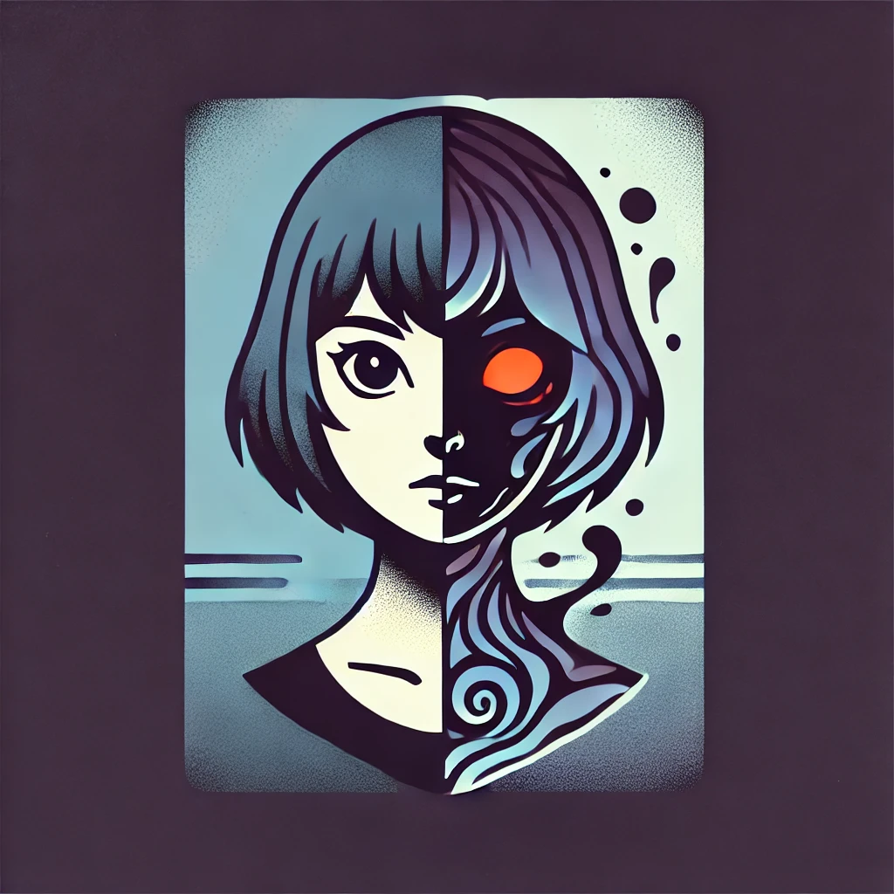

QUITTER
Voices in your head got you feeling like you're going crazy? Hope can relate... on a demonic level.
After waking up in the woods with a splitting headache and a new roommate sharing her body, Hope must fight for control while maintaining "justice" everywhere she goes. There's also that pesky mystery she wants to solve on how this demon got inside of her in the first place... and what the implications of that are... hmm...

After getting a demon trapped inside of her that has little to no interest in helping her on her pursuit of "justice," a violence-seeking vigilante high school girl goes on an adventure across the country to both run from a cult hunting her down and attempt to find a way to get this shape-shifter out of her.
Dark humor, family conflicts, mystery elements, secrets, internal struggles for control. This is what Quitter provides to televisions/streaming services everywhere. In the outside world, there's characters looking to harm the main character. Everything is always trying to wrong her, but she's always ready to fight back. The world is a dark, mysterious place, and the realm of this show may even go beyond this human realm... and into the twisted world where this shape-shifter came from. It's essentially Batman if Batman was a vigilante teenage anti-hero who also has a demon-thing trapped inside of her, and she moves around a lot.
What inspired me to write this story is this whole situation where my aunt and mom thought I was possessed when I was around 13-14. I also really like Batman: The Animated Series and Gravity Falls, and this is kind of my ship-child of the two.